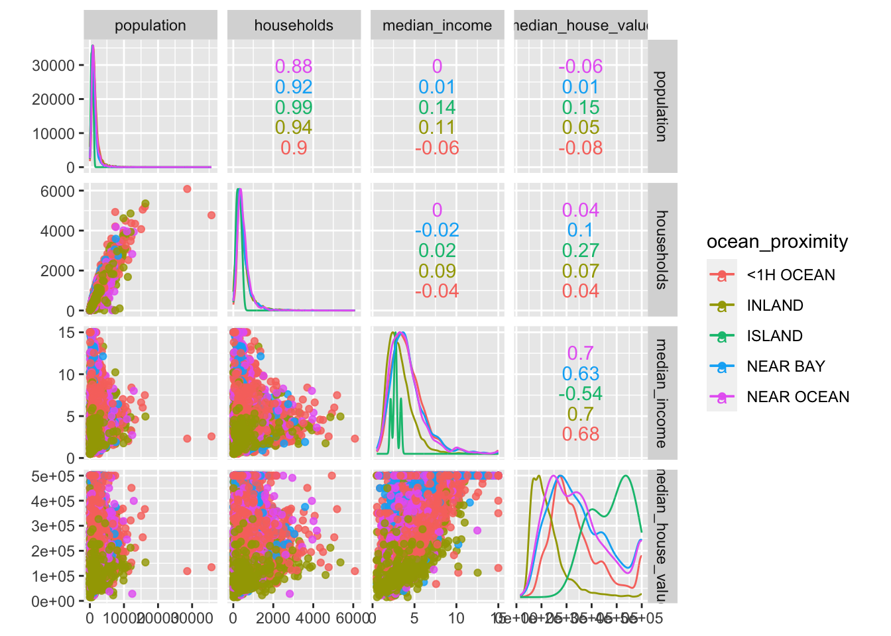
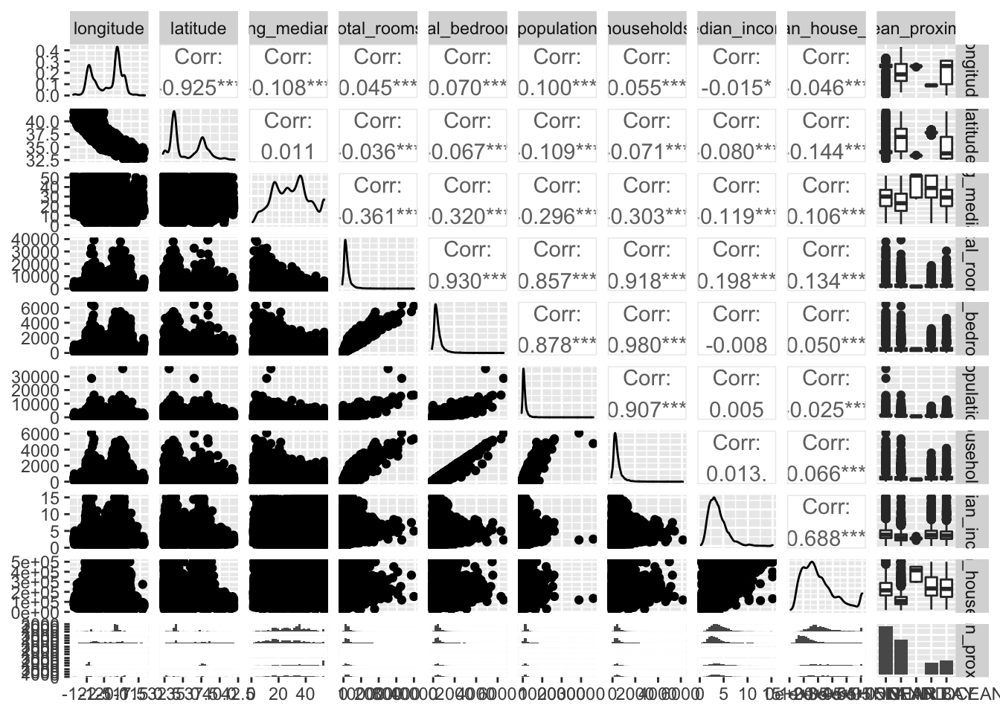
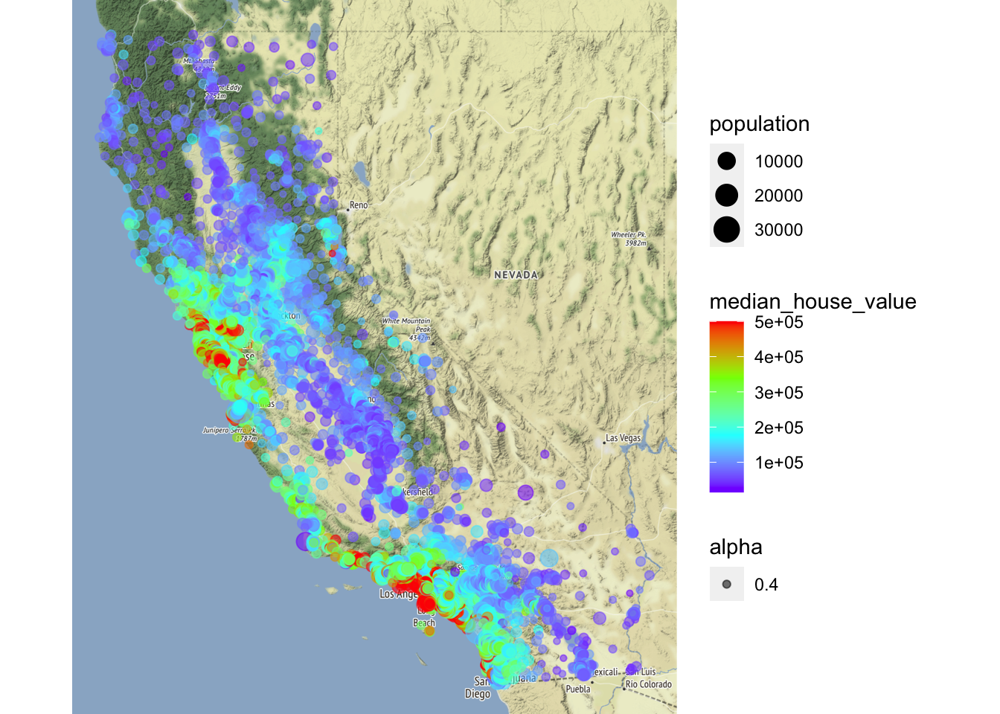

1 Data understanding
In Data Understanding, we first
- Import data
- Get an overview about the data structure
- Discover and visualize the data to gain insights
1.1 Imort Data
First of all, let’s import the data:
LINK <- "https://raw.githubusercontent.com/kirenz/datasets/master/housing.csv"
housing_df <- read_csv(LINK)1.2 Data overview
Next, we take a look at the data structure:
California census top 4 rows of the DataFrame:
head(housing_df, 4)## # A tibble: 4 x 10
## longitude latitude housing_median_… total_rooms total_bedrooms population
## <dbl> <dbl> <dbl> <dbl> <dbl> <dbl>
## 1 -122. 37.9 41 880 129 322
## 2 -122. 37.9 21 7099 1106 2401
## 3 -122. 37.8 52 1467 190 496
## 4 -122. 37.8 52 1274 235 558
## # … with 4 more variables: households <dbl>, median_income <dbl>,
## # median_house_value <dbl>, ocean_proximity <chr>Data info:
glimpse(housing_df)## Rows: 20,640
## Columns: 10
## $ longitude <dbl> -122.23, -122.22, -122.24, -122.25, -122.25, -122.…
## $ latitude <dbl> 37.88, 37.86, 37.85, 37.85, 37.85, 37.85, 37.84, 3…
## $ housing_median_age <dbl> 41, 21, 52, 52, 52, 52, 52, 52, 42, 52, 52, 52, 52…
## $ total_rooms <dbl> 880, 7099, 1467, 1274, 1627, 919, 2535, 3104, 2555…
## $ total_bedrooms <dbl> 129, 1106, 190, 235, 280, 213, 489, 687, 665, 707,…
## $ population <dbl> 322, 2401, 496, 558, 565, 413, 1094, 1157, 1206, 1…
## $ households <dbl> 126, 1138, 177, 219, 259, 193, 514, 647, 595, 714,…
## $ median_income <dbl> 8.3252, 8.3014, 7.2574, 5.6431, 3.8462, 4.0368, 3.…
## $ median_house_value <dbl> 452600, 358500, 352100, 341300, 342200, 269700, 29…
## $ ocean_proximity <chr> "NEAR BAY", "NEAR BAY", "NEAR BAY", "NEAR BAY", "N…Data summary of numerical and categorical attributes using a function from the package skimr:
skim(housing_df)| Name | housing_df |
| Number of rows | 20640 |
| Number of columns | 10 |
| _______________________ | |
| Column type frequency: | |
| character | 1 |
| numeric | 9 |
| ________________________ | |
| Group variables | None |
Variable type: character
| skim_variable | n_missing | complete_rate | min | max | empty | n_unique | whitespace |
|---|---|---|---|---|---|---|---|
| ocean_proximity | 0 | 1 | 6 | 10 | 0 | 5 | 0 |
Variable type: numeric
| skim_variable | n_missing | complete_rate | mean | sd | p0 | p25 | p50 | p75 | p100 | hist |
|---|---|---|---|---|---|---|---|---|---|---|
| longitude | 0 | 1.00 | -119.57 | 2.00 | -124.35 | -121.80 | -118.49 | -118.01 | -114.31 | ▂▆▃▇▁ |
| latitude | 0 | 1.00 | 35.63 | 2.14 | 32.54 | 33.93 | 34.26 | 37.71 | 41.95 | ▇▁▅▂▁ |
| housing_median_age | 0 | 1.00 | 28.64 | 12.59 | 1.00 | 18.00 | 29.00 | 37.00 | 52.00 | ▃▇▇▇▅ |
| total_rooms | 0 | 1.00 | 2635.76 | 2181.62 | 2.00 | 1447.75 | 2127.00 | 3148.00 | 39320.00 | ▇▁▁▁▁ |
| total_bedrooms | 207 | 0.99 | 537.87 | 421.39 | 1.00 | 296.00 | 435.00 | 647.00 | 6445.00 | ▇▁▁▁▁ |
| population | 0 | 1.00 | 1425.48 | 1132.46 | 3.00 | 787.00 | 1166.00 | 1725.00 | 35682.00 | ▇▁▁▁▁ |
| households | 0 | 1.00 | 499.54 | 382.33 | 1.00 | 280.00 | 409.00 | 605.00 | 6082.00 | ▇▁▁▁▁ |
| median_income | 0 | 1.00 | 3.87 | 1.90 | 0.50 | 2.56 | 3.53 | 4.74 | 15.00 | ▇▇▁▁▁ |
| median_house_value | 0 | 1.00 | 206855.82 | 115395.62 | 14999.00 | 119600.00 | 179700.00 | 264725.00 | 500001.00 | ▅▇▅▂▂ |
Count levels of our categorical variable:
housing_df %>%
count(ocean_proximity,
sort = TRUE)## # A tibble: 5 x 2
## ocean_proximity n
## <chr> <int>
## 1 <1H OCEAN 9136
## 2 INLAND 6551
## 3 NEAR OCEAN 2658
## 4 NEAR BAY 2290
## 5 ISLAND 5The function ggscatmat from the package GGally creates a matrix with scatterplots, densities and correlations for numeric columns. In our code, we enter the dataset housing_df, choose columns 6 to 9, a color column for our categorical variable ocean_proximity, and an alpha level of 0.8 (for transparency).
ggscatmat(housing_df, columns = 6:9, color="ocean_proximity", alpha=0.8)
To obtain an overview of even more visualizations, we can use the function ggpairs:
ggpairs(housing_df)
1.3 Data exploration
A Geographical scatterplot of the data:
housing_df %>%
ggplot(aes(x = longitude, y = latitude)) +
geom_point(color = "cornflowerblue")
Figure 1.1: Scatterplot of longitude and latitude
A better visualization that highlights high-density areas:
housing_df %>%
ggplot(aes(x = longitude, y = latitude)) +
geom_point(color = "cornflowerblue", alpha = 0.1) Figure 1.2: Scatterplot of longitude and latitude that highlights high-density areas
California housing prices:
- red is expensive,
- purple is cheap and
- larger circles indicate areas with a larger population.
housing_df %>%
ggplot(aes(x = longitude, y = latitude)) +
geom_point(aes(size = population, color = median_house_value),
alpha = 0.4) +
scale_colour_gradientn(colours=rev(rainbow(4)))Figure 1.3: California housing_df prices
library(ggmap)
qmplot(x = longitude,
y = latitude,
data = housing_df,
geom = "point",
color = median_house_value,
size = population,
alpha = 0.4) +
scale_colour_gradientn(colours=rev(rainbow(4)))